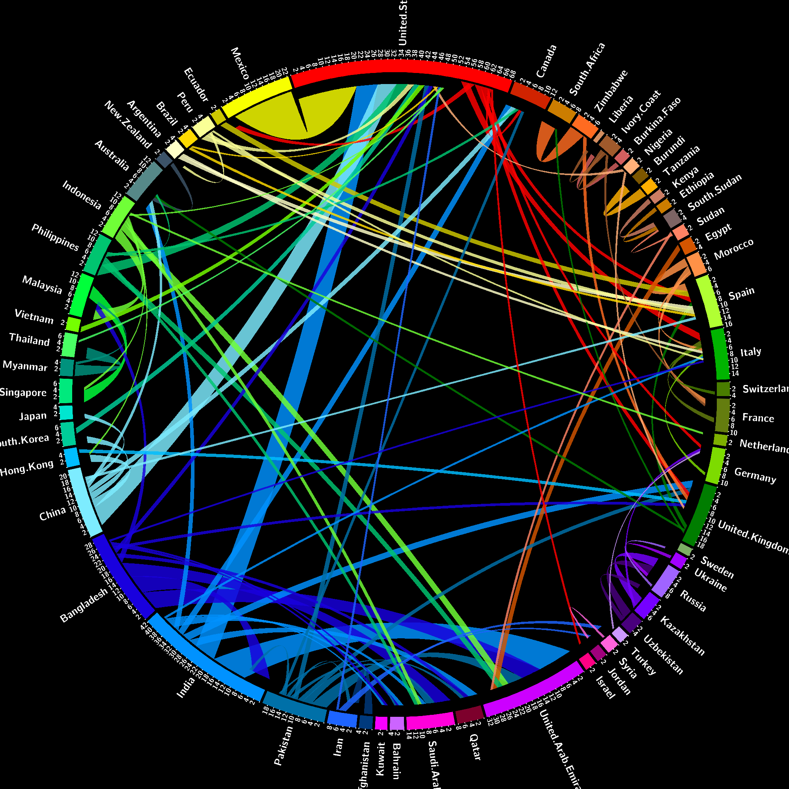
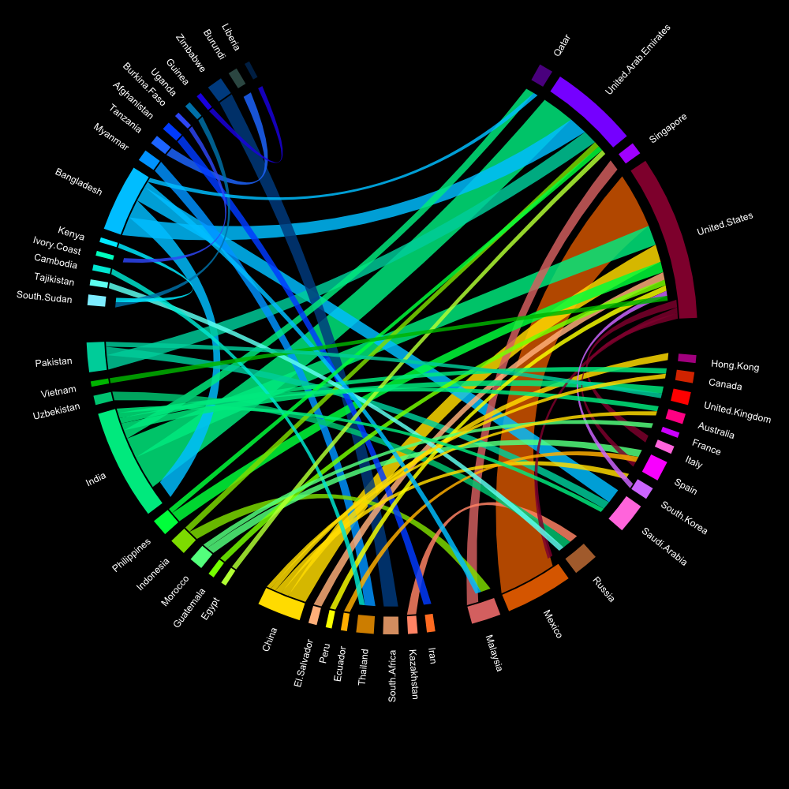
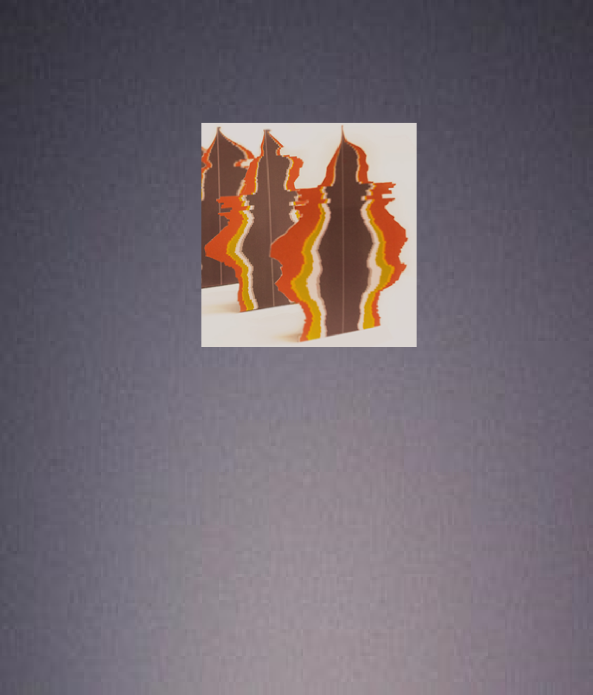
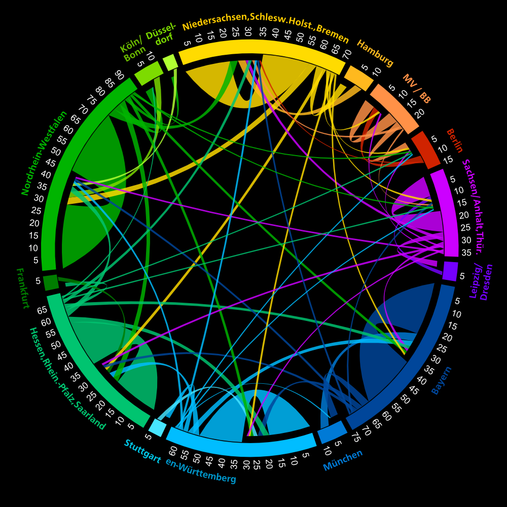
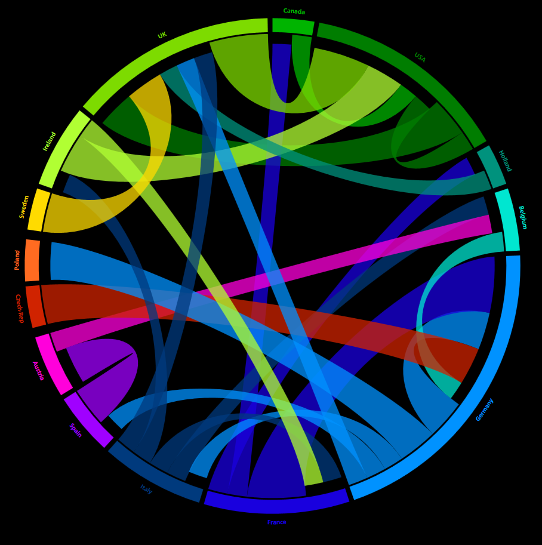

Welcome to our
Circular World
A gallery of migration visualisations
by Nikola Sander, Ramon Bauer, Johannes Schmidt,
Andi Pieper, Guy Abel, Elvira Stein, ...

The Global Flow of People
Quantifying global migration flows

The Not So Wretched Masses

Not circular - but on Vienna
Nikola's Space on the Web

Internal Migration in Germany
Use our d3.js library

Humanity's Cultural History
How to create circular plots
Making code look beautiful